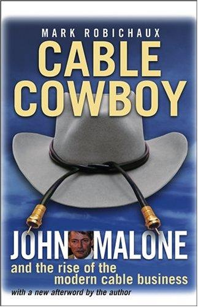

马克·罗比肖（Mark Robichaux）是《华尔街日报》前资深记者，后担任《广播与有线》及《多屏新闻》杂志内容总监。凭借在媒体行业的深厚人脉与多年追踪报道，他获得了约翰·马龙（John Malone）的独家配合，于2002年出版了《有线牛仔》，由约翰·威利出版社发行。本书是迄今为止关于马龙最深入、最权威的传记，也是理解美国有线电视工业崛起历程的必读文本——这段历史不仅仅是一个商业故事，更是美国现代信息基础设施形成过程的核心篇章。
约翰·马龙是美国商业史上最被低估的企业家之一。他毕业于耶鲁大学，拥有电子工程、工业管理与经济学三个学位，后在贝尔实验室和麦肯锡工作，最终在1970年代接掌了濒临破产的有线电视运营商TCI（电信公司）。在此后约二十五年的时间里，马龙凭借极具创造性的财务工程能力与对行业结构的深刻洞察，将TCI打造成美国最大的有线电视运营商，并在此过程中开创了杠杆融资、节税优化与资本配置的一套独特方法论。他对债务的运用方式——借用债务扩张、以折旧抵税、最大化自由现金流——已成为媒体与电信行业并购教科书中的经典案例。
罗比肖以马龙的个人传记为主线，同时讲述了美国有线电视工业从山区小镇的共用天线系统，演变为连接千家万户的数字宽带基础设施的完整历程。书中既有马龙与内容供应商、政府监管机构的激烈博弈，也有他与时代华纳、微软等巨头的战略周旋，更有他在行业衰退期的艰难抉择与最终以370亿美元将TCI出售给AT&T的历史时刻。马龙的形象在书中立体而真实——既是一个在商业博弈中精于算计的"象棋选手"，又是一个内心复杂、不善公众表达的普通人。
《门口的野蛮人》联合作者布莱恩·巴勒评价本书："这是一部一流记者完成的一流著作——在一个值得深入研究的题材上，呈现了出色的原创研究。"（"Cable Cowboy is a first-rate work by a first-rate reporter—excellent, original research on a topic that deserves it."）对于关注约翰·马龙投资哲学的读者——他是《局外人》中被重点研究的资本配置大师之一——《有线牛仔》提供了无可替代的背景知识。对于媒体、电信行业的研究者，以及对杠杆并购与价值创造逻辑感兴趣的投资者，本书同样是极具价值的参考文本。